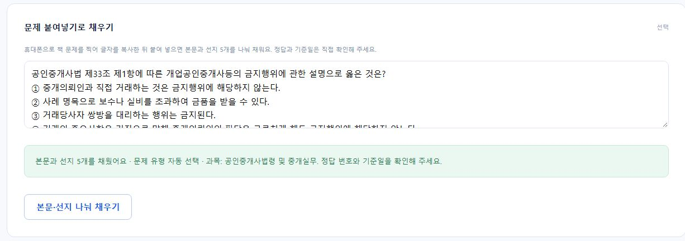
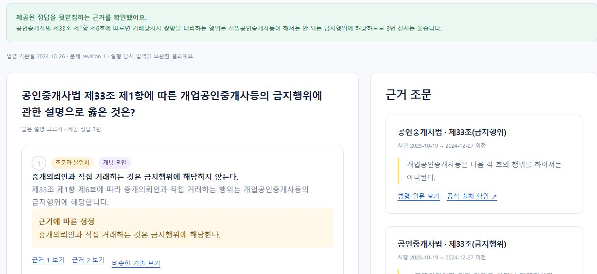

4.3 선지별 분석과 비슷한 기출
선지마다 조문과의 일치, 불일치, 근거 부족을 표시한다. 불일치와 근거가 확인된 선지는 정정 문장을 제시한다. 태그는 시점·기한, 조건 추가, 주체·권한, 개념 오인, 숫자·수치 오류를 사용한다.
같은 과목에서 동일 조문을 다룬 기출을 우선한다. 표현 유사도를 함께 반영한다. 입력 문제는 제외하고 다른 문제에서 최대 3개를 표시한다. 일치하는 기출이 없으면 빈 결과를 표시한다.

| 팀명 | 졸업시켜조 |
|---|---|
| 팀원 | 32213775 임수종 32232888 윤영주 |
| 지도교수 | 박규식 |
| 소속 | 단국대학교 소프트웨어학과 |
| 제출일 | 2026. 11. 16. |
LawGround는 공인중개사 문제의 정답 근거를 찾는 학습 서비스다. 사용자는 본문, 선지 5개, 제공 정답, 법령 기준일을 입력한다. 서비스는 기준일에 시행 중인 조문을 검색한다. 후보 조문으로 정답을 검증하고, 근거 원문과 선지별 해설을 표시한다.
검색에는 PostgreSQL 단어·벡터 검색을 사용한다. 판정에는 Gemini를 사용한다. Spring 워커가 인용 문구와 위치를 원문과 대조한다. 기준일에 적용할 법령을 확인하고 결과를 저장한다. 근거를 확정하기 어려운 경우에는 판단을 보류한다.
제25~36회 기출 802문제의 오프라인 평가에서 BM25의 Recall@5는 공인중개사법령 및 중개실무 93%, 부동산공법 89%였다. 정답 조문을 후보에 포함한 별도 판정 시험에서는 틀린 정답을 입력한 16문제 중 잘못 승인한 사례가 0건이었다.
수험생은 선지의 정오를 확인하기 위해 법률, 시행령, 시행규칙을 따로 찾아야 한다. 법령이 개정되면 출제 당시 기준과 현재 기준이 달라질 수 있다. 정답과 적용 조문을 연결해 확인하는 기능이 필요하다.
| 목표 | 구현 기준 |
|---|---|
| 근거 검색 | 기준일에 시행 중인 법령에서 근거 후보를 최대 5개 찾는다. |
| 정답 검증 | 후보 조문에서 제공 정답의 근거를 확인한다. 근거가 부족하면 판단을 보류한다. |
| 근거 제시 | 판정에 사용한 인용을 원문과 대조한다. 화면에 조문, 시행일, 출처를 표시한다. |
| 복습 지원 | 선지별 해설과 정정을 제공한다. 같은 조문을 다룬 기출 선지를 비교한다. |
공인중개사 2차 1교시의 공인중개사법령 및 중개실무와 부동산공법을 지원한다. 검토 범위는 적재한 법령의 조문으로 판단할 수 있는 문제다.
| 이름 | 학번 | 담당 |
|---|---|---|
| 임수종 | 32213775 | Python AI 서버, 법령 수집·변환, 평가 데이터 및 지표, 유사 기출·변형 비교 |
| 윤영주 | 32232888 | Spring API, 로그인, DB, 작업 큐·워커, 검색·검증 연동, 결과 저장, 추천·평가·배치, 사용자 화면 |
| 대상 | 주요 기능 | LawGround의 적용 방식 |
|---|---|---|
| 국가법령정보센터 | 조문 원문과 연혁 제공 | 문제의 선지를 입력받아 관련 조문을 연결한다. |
| 기출 해설 자료 | 시험 문제 해설 제공 | 사용자가 선택한 기준일과 법령 버전으로 다시 판정한다. |
| 범용 LLM 챗봇 | 자연어 질의에 응답 | 검색한 후보 조문을 근거로 사용하고 인용을 원문과 대조한다. |
서비스는 검색 증강 생성(RAG) 방식을 적용한다. 법령 검색과 판정을 별도 단계로 구성한다.
| 구성 | 역할 | 연결 |
|---|---|---|
| 브라우저 | 문제 입력, 상태 조회, 결과 확인 | Spring의 화면과 REST API를 사용한다. |
| Spring Boot | 로그인, 권한, 분석 접수와 실행 | 동일 프로세스에 API·발행기·분석 워커를 둔다. |
| RabbitMQ | 분석 메시지 전달 | 발행기가 교환기에 작업 ID를 보낸다. LIVE 큐에서 Spring 워커가 수신한다. |
| PostgreSQL | 데이터 저장과 검색 | Spring이 문제, 조문, 색인, 실행 상태, 결과를 조회하거나 저장한다. |
| Python FastAPI | 형태소 분석, 임베딩, 재순위, 검증, 유사 기출 | Spring에서 내부 HTTP API로 호출한다. 판정 단계에서 Gemini API를 사용한다. |
로컬 시연에서는 PostgreSQL과 RabbitMQ를 Docker Compose로 실행한다. Spring Boot와 FastAPI는 호스트에서 각각 실행한다. Spring과 FastAPI는 내부 토큰과 계약 버전을 확인한다.
Spring은 실행과 작업을 DB에 저장하고 HTTP 202로 접수 결과를 반환한다. DB 커밋 후 작업 메시지를 RabbitMQ에 발행한다. 워커는 단계별 체크포인트를 남긴다. 재시도 시 완료된 단계를 재사용한다. 브라우저는 Spring API에서 작업 진행 상태를 주기적으로 조회한다.
ts_rank_cd로 단어 검색 결과의 순위를 매긴다.Gemini는 검색한 후보 조문을 근거로 제공 정답을 판정한다. 결과는 근거 확인, 근거와 불일치, 판단 보류 중 하나다. Python은 인용 위치를 원문에서 다시 계산한다. Spring은 인용, 위치, 시행일을 검사하고 확인된 결과를 저장한다.
| 과목 | 평가에 사용한 법령 범위 | 조문 |
|---|---|---|
| 중개사법령 및 중개실무 | 공인중개사법, 부동산 거래신고 등에 관한 법률과 각 하위 법령 | 267개 |
| 부동산공법 | 국토계획법, 도시개발법, 도시정비법, 건축법, 주택법, 농지법과 각 하위 법령 | 2,155개 별표 106개 포함 |
| 데이터 | 주요 테이블 |
|---|---|
| 법령 원문·색인 | laws, law_versions, law_articles, law_chunks, law_chunk_indexes |
| 회원·문제 | members, questions, question_choices |
| 분석·근거 | trace_runs, processing_jobs, evidence_results, choice_analyses |
국가법령정보센터에서 수집한 원문을 시행일별 버전으로 저장한다. Flyway 마이그레이션 V001~V010으로 스키마를 관리한다.
붙여넣은 문장을 본문과 선지 5개로 분리한다. 인식 가능한 과목과 문제 유형을 채운다. 사용자가 제공 정답과 기준일을 확인해 저장한다. 서버는 입력 길이와 형식을 검사한다.

작업은 서버에서 비동기로 진행한다. 화면을 이동한 뒤에도 내 라이브러리에서 작업을 열 수 있다. 결과는 분석 당시 입력과 함께 저장한다.

선지마다 조문과의 일치, 불일치, 근거 부족을 표시한다. 불일치와 근거가 확인된 선지는 정정 문장을 제시한다. 태그는 시점·기한, 조건 추가, 주체·권한, 개념 오인, 숫자·수치 오류를 사용한다.
같은 과목에서 동일 조문을 다룬 기출을 우선한다. 표현 유사도를 함께 반영한다. 입력 문제는 제외하고 다른 문제에서 최대 3개를 표시한다. 일치하는 기출이 없으면 빈 결과를 표시한다.
Google OIDC와 Spring Session JDBC로 로그인과 세션을 관리한다. 사용자는 자신의 문제와 분석 기록을 조회한다. 수정 시 문제 버전을 비교한다. 상태를 변경하는 요청에는 CSRF 검사를 적용한다. 관련 문제 추천에는 공유 조문과 문제 임베딩을 사용한다.
| 영역 | 구성과 검사 |
|---|---|
| 백엔드·데이터 | Java 21, Spring Boot 3.5, PostgreSQL 16, pgvector, RabbitMQ, Flyway. JUnit, MockMvc, Testcontainers로 검증한다. |
| AI 서버 | Python, FastAPI, Kiwi, BGE-M3, BGE 리랭커, Gemini. pytest로 요청·응답과 서비스 기능을 확인한다. |
| 화면 | HTML, CSS, ES 모듈. Spring이 정적 파일을 제공한다. Playwright로 사용 경로를 검사한다. |
| CI | GitHub Actions에서 백엔드, AI, 계약, 화면, 브라우저 검사를 실행한다. 통합 테스트의 외부 모델 응답은 계약에 맞춘 테스트 서버로 재현한다. |
API 키는 로컬 환경변수로 관리한다. 개발용 자동 로그인은 루프백 주소의 로컬 프로필에서만 켤 수 있다. 기출 원문과 평가용 선지 은행은 로컬 자료로 관리한다.
그림 2~4에 같은 연습문제를 사용했다. 기준일은 2024년 10월 26일이다. 제공 정답은 3번이다. 실제 모델을 연결해 분석한 결과, 근거 확인(SUPPORTED)으로 저장됐다.
| 선지 | 입력 문장 | 판정과 근거 |
|---|---|---|
| 1번 | 중개의뢰인과 직접 거래하는 것은 금지행위에 해당하지 않는다. | 불일치. 공인중개사법 제33조 제1항 제6호는 중개의뢰인과 직접 거래하는 행위를 금지한다. |
| 3번 | 거래당사자 쌍방을 대리하는 행위는 금지된다. | 일치. 같은 조항에 거래당사자 쌍방을 대리하는 행위가 포함된다. |
제33조 제1항 제6호: “중개의뢰인과 직접 거래를 하거나 거래당사자 쌍방을 대리하는 행위”
3번 선지와 연결된 유사 기출은 제35회 6번의 5번 선지다. 화면은 같은 조문을 다룬 기출 문장과 입력 선지를 함께 표시한다. 기출 문장의 출처는 한국산업인력공단(Q-Net)이다.
기존 실측 기록에서는 중개사무소 이전신고와 휴업을 묻는 문제에 제공 정답 1번을 넣었다. 법령 기준일은 2026년 11월 11일이다. 실행 결과는 근거 확인이었다.
| 선지 | 확인한 쟁점 | 근거 |
|---|---|---|
| 1번 | 임신 또는 출산을 휴업기간 제한의 예외 사유로 확인했다. | 공인중개사법 제21조·시행령 제18조 |
| 2번 | 이전사실 신고의 담당 기관을 이전 후 등록관청으로 정정했다. | 공인중개사법 제20조 |
| 3~5번 | 분사무소별 폐업 신고, 재개 신고 첨부서류, 폐업신고서 제출 간주 여부를 각각 검토했다. | 공인중개사법 시행령 제18조 |
제25~36회(2014~2025) 기출 960문제를 수집했다. 포함 기준을 충족한 802문제를 검색 평가에 사용했다. 공인중개사법령 및 중개실무는 337문제, 부동산공법은 465문제다.
| 제외 기준 | 내용 |
|---|---|
| 자료 범위 | 판례, 서식, 평가 코퍼스에서 다루지 않는 법령 |
| 폐지·개정 | 폐지된 제도 또는 법령 개정으로 기존 정답을 적용하기 어려운 문제 |
| 채점 예외 | 공식 최종정답에서 모든 선지를 정답으로 인정한 문제 |
정답 판단에 필요한 조문을 문제별 라벨로 기록했다. AI가 BM25 후보에서 초안을 만들었다. 임수종과 윤영주가 라벨을 교차 검수했다. 표본 검수에서는 중개사법령 20문제 중 18문제가 일치했고 2문제의 근거를 추가했다. 부동산공법 15문제는 모두 일치했다.
Recall@5는 정답 조문이 상위 5개 후보에 포함된 문제의 비율이다. 정답 조문이 여러 개인 문제는 최소 한 조문이 검색되면 적중으로 집계했다.
| 과목 | 문제 수 | BM25 | 의미 검색 | 혼합 검색 |
|---|---|---|---|---|
| 중개사법령 및 중개실무 | 337 | 0.93 [0.90, 0.95] | 0.90 [0.86, 0.92] | 0.92 [0.89, 0.94] |
| 부동산공법 | 465 | 0.89 [0.86, 0.92] | 0.80 [0.77, 0.84] | 0.86 [0.83, 0.89] |
대괄호는 95% Wilson 신뢰구간이다. 이 표는 오프라인 검색 평가 결과다.
상위 5개 기준으로 BM25가 두 과목에서 가장 높았다. 공법에서 BM25와 의미 검색의 차이는 9%p였다. 상위 10개 기준 중개사법령의 혼합 검색은 0.97이었다. 모든 정답 조문을 찾아야 적중으로 집계하면 공법의 BM25와 혼합 검색은 각각 0.78이었다.
정답 조문을 후보에 포함하고 Gemini의 판정만 평가했다. 총 37문제를 사용했다.
| 입력 | 문제 수 | 근거 확인 | 불일치 | 보류 |
|---|---|---|---|---|
| 정답 번호 | 21 | 20 | 0 | 1 |
| 틀린 정답 번호 | 16 | 0 | 14 | 2 |
틀린 정답 번호를 승인한 사례는 이 시험에서 0건이었다. 실제 서비스는 후보 검색을 포함하므로 검색과 판정을 각각 측정했다.
로컬에서 Spring, RabbitMQ, PostgreSQL, Python, Gemini를 연결했다. 제36회 5문제를 연속 실행했다. 작업 5건이 저장까지 완료됐고, 판정은 근거 확인 3건과 보류 2건이었다. 재시도는 0건이다. 평균 처리 시간은 95초였다.
| 문제 | 전체 처리 시간 | 최종 판정 |
|---|---|---|
| 36회 1번 | 96초 | 근거 확인 |
| 36회 3번 | 94초 | 근거 확인 |
| 36회 12번 | 107초 | 판단 보류 |
| 36회 24번 | 126초 | 판단 보류 |
| 36회 27번 | 52초 | 근거 확인 |
조건: 8GB RAM 노트북의 로컬 실행. 보류 2건은 정답 조문 일부가 검색 후보에서 빠진 사례다.
| 결정 | 이유와 효과 |
|---|---|
| 단어·의미 검색 결합 | 법률 용어의 일치와 표현이 바뀐 선지를 함께 처리한다. RRF로 후보를 결합한다. 재순위 효과는 동일 표본의 적용 전후 비교로 확인할 과제다. |
| 후보 조문 기반 검증 | 판정 근거의 범위를 고정한다. 코드가 인용 위치와 시행일을 대조한다. |
| 판단 보류 | 후보 조문으로 결론을 확정하기 어려운 경우를 기록한다. 화면에서 기술 오류와 별도 상태로 표시한다. |
| Spring과 Python 분리 | Spring이 사용자·상태·저장을 관리한다. Python이 모델 기능을 제공한다. 내부 HTTP 계약으로 두 구현을 연결한다. |
| 큐와 체크포인트 | 사용자 요청에 먼저 접수 결과를 반환한다. 서버가 분석을 이어서 실행한다. 재시도 시 완료된 단계를 재사용한다. |
AI 활용 범위와 팀원의 작업을 기능별로 기록했다. 줄 수는 기존 코드 기여 집계의 기준을 따른다.
| 항목 | 내용 |
|---|---|
| 사용 도구 | Claude Code(Anthropic), Codex(OpenAI) |
| 활용 이유 | 반복 코드, 테스트, 평가 스크립트, 문서 초안을 작성하는 데 사용했다. |
| 사람이 정한 것 | 서비스 범위(1과목·공법), 시스템 구조와 분석 단계, API 계약, 평가 방법(Recall@5), 범위 밖 판정 기준, 기능 우선순위 |
| AI에 맡긴 것 | 정해진 설계에 따른 코드·테스트 작성, 데이터 변환·측정 스크립트, 측정 기록 문서 정리 |
| 반영 절차 | 팀원이 코드와 테스트 결과를 검토한 뒤 PR로 반영했다. |
| 라벨 원칙 | 정답 조문 라벨은 AI가 초안만 만들고, 임수종·윤영주가 전체를 교차 검수해 확정 |
| 커밋 표시 | Claude 표기 커밋은 Co-Authored-By: Claude로 확인했다. 도구별 활용은 기능 표에 기록했다. |
코드 파일의 각 줄에서 git blame으로 마지막 수정 커밋을 찾았다. 커밋에 AI 공동 작성 표기가 있는지 집계했다.
공동 작성 표기가 없는 줄에도 AI 도구의 도움을 받은 코드가 포함된다. 기능별 활용 범위는 아래 표에 기록했다.
| 구분 | AI 표시 커밋 | 표시 없음 · 임수종 | 표시 없음 · 윤영주 | 합계 |
|---|---|---|---|---|
| 서비스 코드·설정·계약 | 2,854 | 3,567 | 15,332 | 21,753 |
| 테스트 코드 | 1,184 | 1,782 | 10,402 | 13,368 |
| 합계 | 4,038 (11.5%) | 5,349 | 25,734 | 35,121 |
| 기능 | 코드 | 현재 줄 수 AI 표시 / 표시 없음 | AI 활용 | AI가 한 일 | 사람이 한 일 |
|---|---|---|---|---|---|
| 서버 뼈대·요청 처리 | app/main.py, app/common.py | 43 / 249 | 일부 | 0.2.0 엔드포인트(verify-statement·variation-diff·similar-items) 라우트 추가 | 서버 구조와 라우트 설계, 내부 토큰·계약 버전 헤더 검사 구현, AI 코드 검토·테스트 실행 |
| 요청·응답 모델 | app/contract/models.py, app/contract/checks.py | 215 / 372 | 일부 | 공법 과목 값, 선지 태그, 0.2.0 요청·응답 모델 추가 | 0.1.0 계약 필드 정의(윤영주와 협의), 입력 검증 규칙(길이·형식) 결정, 0.2.0 확장 범위 결정 |
| 계약 Mock 서버 | app/mock/logic.py, app/mock/server.py | 22 / 130 | 대부분 | 0.1.0 Mock 구현, 0.2.0 Mock 응답 추가 | Mock 서버 설계(모델 없이 계약대로 응답) |
| 형태소 분석 | app/services/tokenizer.py | 0 / 77 | 일부 | 일부 코드 작성 보조 | Kiwi 선택, 토큰화 규칙(품사 필터 등) 결정·구현, AI 코드 검토·테스트 실행 |
| 임베딩 | app/services/embedder.py, app/services/hf.py | 25 / 43 | 일부 | 공법 대량 색인용 미리 계산한 임베딩 사용 경로 | bge-m3 모델 선택, 모델 로딩·벡터 계산 코드 구현, 공법 대량 색인을 Colab에서 미리 계산하기로 결정, AI 코드 검토·테스트 실행 |
| 재순위·모델 관리 | app/services/reranker.py, app/services/registry.py | 7 / 101 | 일부 | 공법·태그 설정 반영 | 재순위 모델 선택, 모델 버전을 커밋 해시로 고정하는 방식 설계, AI 코드 검토·테스트 실행 |
| 검증 (Gemini) | app/services/verifier.py | 75 / 312 | 일부 | 공법 지원, 선지 태그 5종 프롬프트(v2) | 판정 3종·사유 코드 설계, 프롬프트 방향과 규칙 작성, Gemini 모델 선택과 호출 구현, 인용 위치를 원문에서 다시 찾는 방식 결정 |
| 문장 하나 확인 | app/services/statement.py | 133 / 0 | Claude Code | 문장 판정 로직·응답 구성 | 기능 정의, 판정 기준 |
| 변형 비교 | app/services/variation.py | 131 / 0 | Claude Code | 글자 단위 비교, 변형 태그 추정, 공부 팁 | 태그 체계 5종 결정 |
| 비슷한 기출 | app/services/similar.py | 109 / 0 | Claude Code | 은행 로드, 자기 문제 제외, 점수 계산(유사도 + 같은 조문) | 기능 선택, 결과 확인(36-09·36-27·공법 사례) |
| 골든셋 평가 계산 | app/evaluation.py | 0 / 491 | 대부분 | 계산 로직 구현 | 평가 지표 정의, AI 코드 검토·테스트 실행 |
| 내부 API 명세 0.1.0 | ai-service/openapi.yaml | 1 / 1,093 | 대부분 | 명세 작성 | 윤영주와 계약 협의·필드 결정, AI 작성분 검토 |
| 내부 API 명세 0.2.0 초안 | ai-service/openapi-0.2.0-draft.yaml | 642 / 0 | Claude Code | 명세 작성 | 확장 범위 결정 |
| 기능 | 코드 (ai-service/scripts/) | 현재 줄 수 AI 표시 / 표시 없음 | AI 활용 | AI가 한 일 | 사람이 한 일 |
|---|---|---|---|---|---|
| 검색 정확도 평가 | eval_retrieval.py | 0 / 123 | 일부 | 일부 코드 작성 보조 | Recall@k·Wilson 신뢰구간 지표 결정, 평가 스크립트 구현, 결과 해석(공법 BM25 우세 등) |
| LLM 판정 점검 | verify_probe.py | 34 / 174 | 대부분 | 점검 스크립트 작성, 공법 문제 지원 | 점검 문제 선정 |
| 법령 가져오기 변환 | law_to_import.py | 13 / 135 | 대부분 | 변환 코드 구현, 긴 별표 여러 조각 분할 | 국가법령정보 API 응답 구조 분석, 조문 분할·변환 규칙 결정, 변환 결과 검토 |
| 시험용 데이터 생성 | gen_fixtures.py | 0 / 108 | 대부분 | 생성 코드 구현 | 합성 데이터 형태 결정, AI 코드 검토 |
| 서버 동작 점검 | smoke.py | 0 / 90 | 대부분 | 점검 스크립트 구현 | 점검 항목 결정, 실행해서 동작 확인 |
| OpenAPI 내보내기 | export_openapi.py | 10 / 15 | 일부 | 0.2.0 명세 내보내기 | 스크립트 구현 |
| 기출 PDF → 문제 변환 | exam_pdf_to_jsonl.py | 111 / 0 | Claude Code | PDF 글자 추출, 문제·선지 분리 | 결과 확인·수정 |
| 기출 선지 은행 생성 | build_choice_bank.py | 94 / 0 | Claude Code | 선지 3,950개 정오·근거 조문 묶기 | 사용 범위 결정 |
| 검색 단계 시간 측정 | search_stage_probe.py | 112 / 0 | Claude Code | 단계별 시간 측정 | 측정 조건 결정, 결과 해석 |
| 분석 일괄 실행 | run_analysis.py | 145 / 0 | Claude Code | 문제 등록·분석 요청·결과 수집 | 실행 문제 선정 |
| 모델 메모리 점검 | model_scan.py | 70 / 0 | Claude Code | 모델 로딩 메모리 측정 | 8GB PC 메모리 문제를 보고 측정 필요성 판단, 측정 결과로 실행 순서·설정 결정 |
| 36회 공법 스캔본 입력 | (데이터, 코드 아님) | — | Claude Code | 페이지 이미지 판독, 40문제 옮겨 적기 | AI가 옮긴 40문제를 원본 이미지와 대조 확인, 오탈자·번호 수정 |
| 환경변수 설정 도우미 | env_set.py | 100 / 0 | Claude Code | .env 값 설정 스크립트 | AI 코드 검토 |
파일 경로는 backend/src/main/java/com/lawground/를 기준으로 한다.
| 기능 | 코드 | 현재 줄 수 AI 표시 / 표시 없음 | AI 활용 | AI가 한 일 | 사람이 한 일 |
|---|---|---|---|---|---|
| Google 로그인·세션 | auth/, member/ | 0 / 684 | 일부 | 로컬 개발용 로그인 구현, 코드 작성 보조 | Google OIDC 연동 방식 설계, 회원·로그인 계정 연결 구조 설계, 세션(JDBC)·CSRF 정책 결정, AI 코드 검토·테스트 실행 |
| 문제 저장·라이브러리 | question/ | 2 / 775 | 일부 (AI 표시는 공법 과목 값 2줄) | 라이브러리 목록·검색·페이지 구현 | 문제·선지 저장 구조 설계, revision으로 동시 수정 막는 방식 설계, 입력 검증 규칙 결정, AI 코드 검토·테스트 실행 |
| 공통 설정·오류·보안 | global/, LawGroundApplication.java | 4 / 1,042 | 일부 (AI 표시는 비슷한 기출 경로 허용 4줄) | 오류 처리·필터 코드 작성 보조 | 오류 응답 형식·오류 코드 설계, 요청 ID 추적 구현, 입력 문자 정책 결정, AI 코드 검토·테스트 실행 |
| 법령 저장·조회 | law/service/, law/dto/, law/controller/ | 0 / 346 | 일부 | 코드 작성 보조 | 시행일 버전 관리 규칙 결정, 법령 가져오기 서비스 구현, AI 코드 검토·테스트 실행 |
| 하이브리드 검색 (FTS·벡터·RRF) | law/search/ | 24 / 954 | 일부 (AI 표시는 재순위 생략 옵션 24줄) | RRF 결합 구현 | PostgreSQL FTS·pgvector 검색 쿼리 구현, 색인 일관성(manifest) 검사 설계, AI 코드 검토·테스트 실행 |
| AI 서버 HTTP 연결 | integration/ | 49 / 983 | 일부 (AI 표시는 0.2.0 호출·태그 전달) | 검증 응답 검사 구현 | 내부 API 계약 협의(임수종과), HTTP 클라이언트 구현(시간 제한·재시도), 모델 버전 대조 방식 설계, AI 코드 검토·테스트 실행 |
| 작업 큐·워커·재시도 | job/ | 41 / 1,511 | 일부 (AI 표시는 공법 법령 범위·재순위 생략 설정) | 코드 작성 보조 | 작업 상태 흐름 설계, 리스·fencing 방식 설계, checkpoint·재시도 정책 결정, 복구 스케줄러 구현 |
| 분석 실행·결과 저장 | trace/ | 13 / 929 | 일부 (AI 표시는 선지 태그 저장) | 결과 응답 구성, 인용 대조 코드 작성 | 분석 접수 API·멱등 키 설계, 결과 원자 저장 구현, AI 코드 검토·테스트 실행 |
| 관련 문제 추천 | recommendation/ (비슷한 기출 제외) | 0 / 358 | 일부 | 조회 쿼리 구현 | 추천 기준(근거 조문 + 임베딩) 결정, 권한·시행기간 필터 결정 |
| 비슷한 기출 API | recommendation/SimilarChoiceController.java | 71 / 0 | Claude Code | 선지 문장·근거 조문 키 구성, AI 서버 호출, 오류 처리 | 기능 정의 (임수종) |
| 골든셋 평가 | evaluation/ | 0 / 939 | 직접 작성 | — | 평가셋 고정·누수 검사 설계, 평가 실행·집계 구현 |
| 기출 일괄 실행 | batch/ | 0 / 480 | 일부 | 코드 작성 보조 | 배치 실행·재개 방식 설계, 집계 구현, AI 코드 검토·테스트 실행 |
| 법령 가져오기 실행기 | bootstrap/LawImportRunner.java | 155 / 0 | Claude Code | 공법 법령 파일 일괄 가져오기 | 실행·확인 (임수종) |
| AI 연결 점검 | bootstrap/AiConnectionSmoke.java | 0 / 171 | 대부분 | 점검 항목 결정, 점검 코드 구현 | 실행해서 동작 확인 |
| DB 스키마 V001~V009 | db/migration/ | 0 / 582 | 일부 | 작성 보조 | 테이블·제약 조건 설계, 결과 수정 금지 트리거 설계, 마이그레이션 SQL 작성 |
| DB 스키마 V010 (공법 과목) | V010__public_law_subject.sql | 3 / 0 | Claude Code | 과목 값 추가 | 공법 포함 결정 |
| 설정 | application*.yml | 2 / 186 | 대부분 | 설정 파일 작성 | AI 작성분 검토 |
| 기능 | 코드 | 현재 줄 수 AI 표시 / 표시 없음 | AI 활용 | AI가 한 일 | 사람이 한 일 |
|---|---|---|---|---|---|
| 사용자 화면 | frontend/src/ (app.js, analysis.js, domain.js, api.js, styles.css, index.html) | 97 / 486 | 일부 (AI 표시는 아래 3개 기능) | 화면 코드 작성 보조 | 화면 흐름·구성 설계, 디자인(색·배치) 결정, 화면 구현, API 연결 구현 |
| └ 붙여넣기 → 선지 자동 분리 | domain.js | 포함 | Claude Code | 문장 분리 규칙 | 요구 사항 |
| └ 공법 과목·선지 태그 표시 | app.js, analysis.js | 포함 | Claude Code | 화면 구현 | 요구 사항 |
| └ 비슷한 기출 보기 | app.js, analysis.js, styles.css | 포함 | Claude Code | 버튼·펼침·다른 글자 표시 | 화면 확인 |
| 붙여넣기 분리 시제품 | docs/prototypes/paste_split.html | 297 / 0 | Claude Code | 시제품 페이지 | 동작 확인 |
| 사용자·내부 API 계약 | docs/api/*.openapi.yaml | 4 / 4,409 | 일부 | 명세 작성 | 사용자 API 설계, 내부 API 협의(임수종과), AI 작성분 검토 |
| 저장소·계약 검사 | scripts/ | 0 / 465 | 일부 | 검사 스크립트 구현 | 검사 규칙(비밀값·제외 파일) 결정, AI 코드 검토 |
| CI·실행 환경 | .github/workflows/ci.yml, docker-compose.yml | 0 / 179 | 일부 | CI 단계 구성, docker-compose 구성 | 워크플로 작성 |
| 범위 | 위치 | 현재 줄 수 AI 표시 / 표시 없음 | AI 활용 | 비고 |
|---|---|---|---|---|
| 백엔드 | backend/src/test/ | 195 / 10,178 | 일부 (윤영주: 테스트 시나리오 결정, 테스트 코드 작성, 실패 원인 수정, AI 작성분 검토) | AI 표시: 비슷한 기출 통합 테스트, 재순위 생략·공법 테스트 |
| AI 서버 | ai-service/tests/ | 943 / 1,782 | 일부 | AI 표시: 0.2.0 기능·은행·공법·변환 테스트 |
| 화면 | frontend/tests/ | 46 / 131 | 일부 (윤영주: 테스트 시나리오 결정, 테스트 코드 작성, 실패 원인 수정, AI 작성분 검토) | AI 표시: 붙여넣기·태그·비슷한 기출 테스트 |
임수종과 윤영주는 두 과목의 정답 조문 라벨을 교차 검수했다. 팀은 평가 제외 기준과 기능 우선순위를 정하고, 발표와 시연을 준비했다.
| 한계 | 확인한 내용 | 향후 과제 |
|---|---|---|
| 근거 누락 | 복수 조문이 필요한 문제는 후보 일부가 빠질 수 있다. | 질의 구성과 후보 범위를 비교하고, 모든 근거의 검색률을 측정한다. |
| 평가 표본 | 조건부 판정 시험은 37문제로 진행했다. | 과목과 회차를 늘려 불일치, 보류, 오승인 비율을 확인한다. |
| 처리 시간 | 로컬 전체 연결 시험은 문제당 52~126초가 걸렸다. | 재순위 옵션별 처리 시간과 검색 결과를 같은 입력에서 비교한다. |
| 지원 범위 | 판례와 서식, 적재 범위 밖 법령은 추가 자료가 필요하다. | 공식 자료를 확보한 뒤 법령 버전과 기출 라벨을 갱신한다. |
문제 등록, 법령 검색, 정답 판정, 근거 저장, 유사 기출 비교를 구현했다. 사용자 화면에서 같은 문제의 선지 분석과 근거 원문을 함께 확인할 수 있다.
오프라인 검색 평가는 802문제로 진행했다. 정답 조문을 후보에 포함한 판정 시험에서 틀린 정답을 승인한 사례는 16문제 중 0건이었다. 로컬 전체 연결 시험은 5건을 저장까지 완료했다.
개발 과정에서 입력·응답 계약을 먼저 정리하자 두 서버를 단계별로 확인할 수 있었다. 검색과 판정을 따로 측정하니 근거가 빠진 경우와 판정이 보류된 경우를 구분할 수 있었다.
docker compose up -d --wait를 실행한다.backend에서 .\gradlew.bat bootRun --args="--spring.profiles.active=local"을 실행한다.ai-service 가상환경에서 uvicorn app.main:app --host 127.0.0.1 --port 8001을 실행한다.http://localhost:8081을 연다. 분석에는 기준일에 해당하는 법령 색인과 검증 모델 설정이 필요하다.세부 설정: 시연 실행 순서 및 저장소 README.